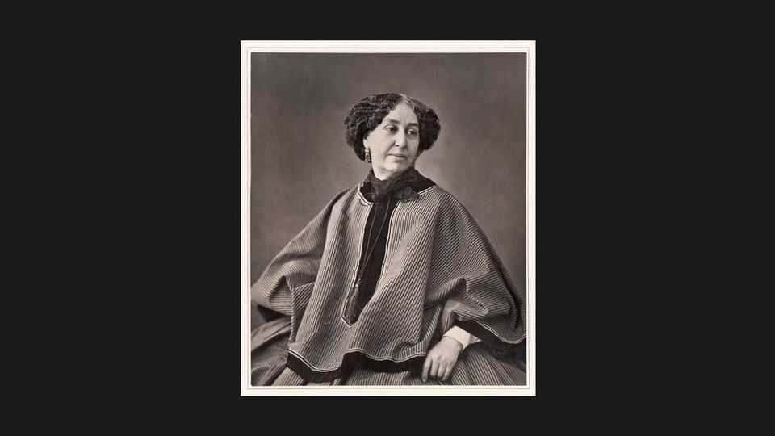

George Sand’s life was a heady mix of sex and serious fiction
A new biography seeks to restore the French novelist’s place in the literary canon
July 16th 2026

HOW MUCH do you know about George Sand? If you are an Anglophone reader, the answer is probably “not a lot”. You might recall that she was a French writer and that “George Sand” was a pseudonym (her real name was Amantine Lucile Aurore Dupin de Francueil). Perhaps you know that she wore men’s clothes and smoked cigars, or that she had a long affair with Frédéric Chopin, a celebrated composer. Only a few, however, will be able to name her works—and even fewer can claim to have actually read them. (Francophone readers, meanwhile, may have studied her books in school.)
With a new biography, Fiona Sampson, a poet, hopes to change that. She argues that Sand should be thought of as “one of the great novelists of the 19th century”. Sand was prolific—she had to be, given she supported herself and various lovers by her pen—and over the course of a 45-year career she produced more than 50 novels, scores of essays, memoirs and plays, as well as thousands of letters. Ms Sampson argues that the vast body of work was influential, too, probing the inner lives of her female characters and containing “some of the first ecological literature and pioneering fictions of rural life”.
Still, if Sand’s reputation has become “all personality, little art” it is mostly because she was an extraordinary person. Her life was eventful, scandalous even, from the get-go: her father, scion of a distinguished military family, married her mother, a former chorus girl, shortly before Sand was born. Her beloved father died in a riding accident when she was four. Many years later, when his grave was accidentally disturbed, Sand took the opportunity to clamber in and kiss his skull.
After a spell in a convent as a teenager, Sand briefly considered taking religious vows. Instead she made vows of a different kind and, at 18, married a man who turned out to be boorish and violent. Before too long Sand left him—and her children—for Paris’s literary scene. She began collaborating with Jules Sandeau, a lover, and borrowing his name. But she soon struck out on her own. After an early hit with “Indiana”, publishers began competing for the rights to her work.
“Becoming George” is a romp to read. This is partly because Sand was a libertine, and an extremely successful one at that. (She is on holiday with one paramour when he falls ill; while he is recovering, she seduces the doctor who has come to care for him.) It is also because Ms Sampson is a skilful writer, who deftly evokes the cultural firmament in which Sand lived and worked. She has an enjoyable turn of phrase, too: one man is described as “a sexless creature, something of a bulgy-eyed haddock”. Typhoid, she muses, “must be quite an effective prophylactic”.
The biography, however, falls short of its intended aim. At times Ms Sampson tells, rather than shows, the reader that Sand’s works matter; more in-depth literary analysis would have bolstered her argument. Sand’s personality remains more intriguing than her art. She emerges as an astonishingly modern hero—so much so that you wonder why there hasn’t been a Hollywood biopic about her in recent years.
Nevertheless, some readers may still be tempted to pick up a copy of “Indiana”, “Lélia” or “Mauprat” after they have finished “Becoming George”. For Ms Sampson lays out just how many admirers Sand had, including the Brontë sisters, Fyodor Dostoyevsky and Marcel Proust. Gustave Flaubert, who exchanged letters with Sand for many years, addressed his fellow writer as chère maître (dear master). After her death, he predicted that “Her name will live in unique glory as one of the great figures of France.” Any novelist with such a famous fanbase is surely worth a try. ■
For more on the latest books, films, TV shows, albums and controversies, sign up to Plot Twist, our weekly subscriber-only newsletter